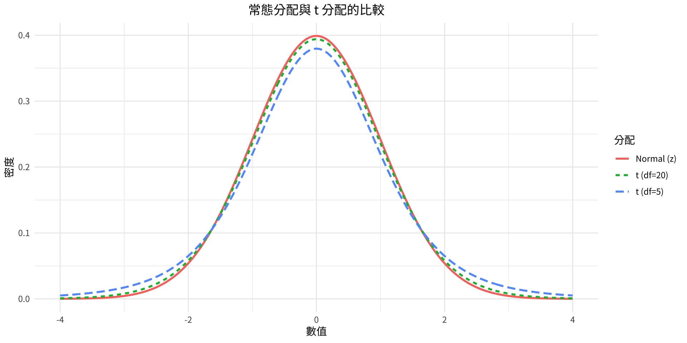
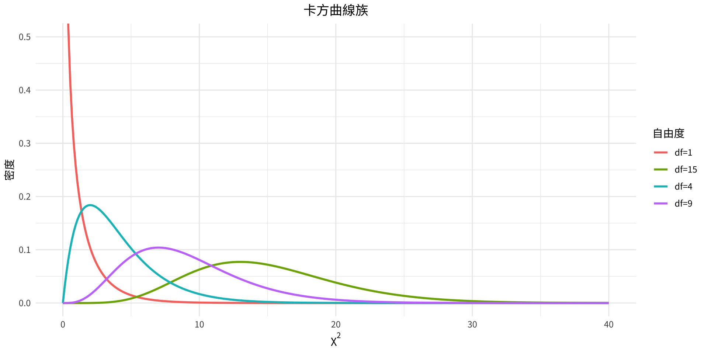

[1] -1.64[1] -1.96[1] -2.58第七章：信賴區間與樣本大小
實踐大學
2026-06-04
涵蓋章節：
估計是利用樣本資料來近似母體參數值的過程。由於從整個母體蒐集資料通常不切實際，我們依賴樣本統計量——估計量——來推論母體的樣貌。
本章介紹兩種估計類型：點估計（單一數值）與區間估計（一組合理值的範圍）。此外，本章也探討一個重要的實務問題：我們需要多大的樣本？
點估計
點估計是用來估計母體參數的單一數值。母體平均數 μ 的最佳點估計量為樣本平均數 \bar{X}。
區間估計
區間估計是用來估計參數的一個數值範圍。它承認樣本平均數會因抽樣變異而與 μ 有所不同。
單獨的點估計無法提供精確度的概念。區間估計——搭配信賴水準——告訴我們估計的可靠程度。
良好估計量的三項性質
樣本平均數 \bar{X} 滿足所有三項性質——它是 μ 的首選估計量。
信賴水準
信賴水準是指在重複估計的過程中，區間估計將包含真實母體參數的機率。
信賴區間
信賴區間是根據樣本資料與選定的信賴水準所決定的參數特定區間估計。常見水準：90%、95%、99%。
信賴水準越高 → 區間越寬。精確度與確定性之間永遠存在取捨關係。
信賴區間公式（σ 已知）
\bar{X} - z_{\alpha/2}\left(\frac{\sigma}{\sqrt{n}}\right) < \mu < \bar{X} + z_{\alpha/2}\left(\frac{\sigma}{\sqrt{n}}\right)
| 信賴水準 | z_{\alpha/2} |
|---|---|
| 90% | 1.65 |
| 95% | 1.96 |
| 99% | 2.58 |
其中 E = z_{\alpha/2}(\sigma/\sqrt{n}) 稱為誤差邊界。
假設條件：
隨機樣本；
n ≥ 30，或若 n < 30 則母體為常態分配。
在 R 中求 z 值
問題
一位研究人員想估計銷售一輛雪佛蘭 Aveo 平均所需的天數。抽取 50 輛汽車的樣本，其在展示場停留的平均時間為 54 天。假設母體標準差為 6.0 天。求母體平均數的最佳點估計及 95% 信賴區間。
解題步驟（數學）：
點估計：\bar{X} = 54 天
54 - 1.96\left(\frac{6.0}{\sqrt{50}}\right) < \mu < 54 + 1.96\left(\frac{6.0}{\sqrt{50}}\right) 54 - 1.7 < \mu < 54 + 1.7 \mathbf{52.3 < \mu < 55.7}
問題
一項針對 30 位急診室病患的調查發現，平均等候時間為 174.3 分鐘。母體標準差已知為 46.5 分鐘。求真實平均等候時間的最佳點估計及 99% 信賴區間。
解題步驟（數學）：
174.3 - 2.58\left(\frac{46.5}{\sqrt{30}}\right) < \mu < 174.3 + 2.58\left(\frac{46.5}{\sqrt{30}}\right) 174.3 - 21.9 < \mu < 174.3 + 21.9 \mathbf{152.4 < \mu < 196.2} —
Point estimate: 174.3 99% CI: ( 152.4 , 196.2 )解讀： 我們有 99% 的把握，急診室真實平均等候時間介於 152.4 至 196.2 分鐘之間。
對於 90%、95%、99% 以外的信賴水準，z_{\alpha/2} 的求法如下：
問題
下列資料為賓州西南部 30 家信用合作社的資產（單位：百萬美元）樣本。假設 σ = 14.405，求平均數的 90% 信賴區間。
12.23, 16.56, 4.39, 2.89, 1.24, 2.17, 13.19, 9.16, 1.42, 73.25, 1.91, 14.64, 11.59, 6.69, 1.06, 8.74, 3.17, 18.13, 7.92, 4.78, 16.85, 40.22, 2.42, 21.58, 5.01, 1.47, 12.24, 2.27, 12.77, 2.76
assets <- c(12.23, 16.56, 4.39, 2.89, 1.24, 2.17, 13.19, 9.16, 1.42,
73.25, 1.91, 14.64, 11.59, 6.69, 1.06, 8.74, 3.17, 18.13,
7.92, 4.78, 16.85, 40.22, 2.42, 21.58, 5.01, 1.47, 12.24,
2.27, 12.77, 2.76)
xbar <- mean(assets); sigma <- 14.405; n <- length(assets)
z <- qnorm(0.95) # 90% CI → alpha/2 = 0.05
E <- z * sigma / sqrt(n)
cat("X-bar =", round(xbar, 3), "\n")X-bar = 11.091 90% CI: ( 6.765 , 15.417 )答案： 6.752 < \mu < 15.430 百萬美元。我們有 90% 的把握，該地區所有信用合作社的平均資產介於 $6.752M 至 $15.430M 之間。
最小樣本大小公式
n = \left(\frac{z_{\alpha/2} \cdot \sigma}{E}\right)^2
其中 E 為期望的誤差邊界。計算結果一律無條件進位至最近的整數。
所需資訊： - 期望的信賴水準（決定 z_{\alpha/2}） - 母體標準差 σ（或來自先前研究的估計值） - 可接受的誤差邊界 E
問題
一位科學家想估計某河流的平均深度。她希望以 99% 的信賴水準，估計誤差在 2 英尺以內。先前研究發現 σ = 4.33 英尺。求所需的最小樣本大小。
解題步驟（數學）：
z_{\alpha/2} = 2.58，E = 2，\sigma = 4.33
n = \left(\frac{2.58 \times 4.33}{2}\right)^2 = \left(\frac{11.17}{2}\right)^2 = (5.585)^2 = 31.2 \rightarrow \mathbf{n = 32}
[1] 31.20004[1] 32答案： 科學家至少需要 32 次測量，才能以 99% 的信賴水準達到所需精確度。
當 σ 未知時，以樣本標準差 s 作為替代。然而，這會引入額外的不確定性——尤其是小樣本時。適用的分配為 Student’s t 分配。
t 分配的特性
與常態分配相似： 1. 鐘形且對稱於平均數 2. 平均數、中位數與眾數皆等於 0 3. 曲線永不觸及 x 軸
與常態分配的差異： 1. 變異數大於 1（尾部較厚） 2. 它是以自由度（d.f.）為索引的曲線族 3. 隨著自由度增加，t 分配趨近標準常態分配
x <- seq(-4, 4, length.out = 300)
df_plot <- data.frame(
x = rep(x, 3),
y = c(dnorm(x), dt(x, df = 5), dt(x, df = 20)),
dist = rep(c("Normal (z)", "t (df=5)", "t (df=20)"), each = 300)
)
ggplot(df_plot, aes(x, y, color = dist, linetype = dist)) +
geom_line(linewidth = 1) +
labs(title = "常態分配與 t 分配的比較",
x = "數值", y = "密度", color = "分配", linetype = "分配")
自由度
對於平均數的信賴區間：d.f. = n − 1
自由度決定應使用哪條 t 曲線。在 R 中：qt(p, df = n-1)
信賴區間公式（σ 未知）
\bar{X} - t_{\alpha/2}\left(\frac{s}{\sqrt{n}}\right) < \mu < \bar{X} + t_{\alpha/2}\left(\frac{s}{\sqrt{n}}\right)
其中 t_{\alpha/2} 取自表 F，自由度 d.f. = n − 1。
假設條件： (1) 隨機樣本；(2) n ≥ 30，或若 n < 30 則母體近似常態分配。
決策規則
| Condition | Use |
|---|---|
| σ known, n ≥ 30 | z and σ |
| σ known, n < 30 (normal pop.) | z and σ |
| σ unknown, n ≥ 30 | t and s |
| σ unknown, n < 30 (normal pop.) | t and s |
問題
當樣本大小 n = 22 時，求 95% 信賴區間的 t_{\alpha/2} 值。
解題步驟（數學）：
d.f. = 22 − 1 = 21。在表 F 第 21 列的 95% 欄查值。
t_{\alpha/2} = 2.080
[1] 2.079614重要規則
對於信賴區間，一律使用 qt(1 - alpha/2, df = n-1)。 對於 95% CI：qt(0.975, df = n-1)。
問題
10 位隨機受訪者報告了其每晚睡眠時數。樣本平均數為 7.1 小時，標準差為 0.78 小時。假設變數服從常態分配，求平均數的 95% 信賴區間。
解題步驟（數學）：
σ 未知，n = 10 < 30 → 使用 t 分配。d.f. = 9，t_{\alpha/2} = 2.262
7.1 - 2.262\left(\frac{0.78}{\sqrt{10}}\right) < \mu < 7.1 + 2.262\left(\frac{0.78}{\sqrt{10}}\right) 7.1 - 0.56 < \mu < 7.1 + 0.56 \mathbf{6.54 < \mu < 7.66}
問題
下列資料為連續 7 年中，每年因蠟燭引發的住宅火災次數。求每年蠟燭引發住宅火災平均次數的 99% 信賴區間。
5460, 5900, 6090, 6310, 7160, 8440, 9930
n = 7 X-bar = 7041.4 s = 1610.3 t_alpha/2 (df=6) = 3.707 99% CI: ( 4785 , 9297.9 )答案： 4785.2 < \mu < 9297.6 次/年。根據 7 年的資料，我們有 99% 的把握，真實平均值落在此範圍內。
比例的符號表示
\hat{p} = \frac{X}{n} \quad \text{（樣本比例）} \qquad \hat{q} = \frac{n-X}{n} = 1 - \hat{p}
其中 X = 樣本中具有感興趣特性的單位數，n = 樣本大小。
母體比例以 p 表示（且 q = 1 − p）。
樣本比例 \hat{p} 是 p 的不偏、一致且相對有效的估計量，也是 p 的最佳點估計量。
信賴區間公式： \hat{p} - z_{\alpha/2}\sqrt{\frac{\hat{p}\hat{q}}{n}} < p < \hat{p} + z_{\alpha/2}\sqrt{\frac{\hat{p}\hat{q}}{n}}
條件： n\hat{p} \geq 5 且 n\hat{q} \geq 5
問題
在一項針對 150 個家庭的近期調查中，54 個家庭裝有中央冷氣。求 \hat{p} 與 \hat{q}，其中 \hat{p} 為裝有中央冷氣的家庭比例。
解題步驟（數學）：
\hat{p} = \frac{X}{n} = \frac{54}{150} = 0.36 = 36\% \hat{q} = \frac{n - X}{n} = \frac{150 - 54}{150} = \frac{96}{150} = 0.64 = 64\%
p-hat = 0.36 q-hat = 0.64 這給出最佳點估計：36% 的家庭裝有中央冷氣。
問題
一項針對 1404 位受訪者的調查發現，323 位學生透過學生貸款支付學費。求真實比例（透過學生貸款支付學費的學生比例）的 90% 信賴區間。
解題步驟：
\hat{p} = 323/1404 = 0.230，\hat{q} = 0.770，z_{\alpha/2} = 1.65
0.230 \pm 1.65\sqrt{\frac{(0.230)(0.770)}{1404}} = 0.230 \pm 0.019 \mathbf{0.211 < p < 0.249}
p-hat = 0.23 90% CI: ( 0.212 , 0.249 )解讀： 我們有 90% 的把握，透過學生貸款支付學費的學生比例介於 21.1% 至 24.9% 之間。
問題
一項針對 1721 人的調查發現，15.9% 的人在基督教書店購買宗教書籍。求在該書店購買宗教書籍的真實人口比例的 95% 信賴區間。
解題步驟：
\hat{p} = 0.159，\hat{q} = 0.841，z_{\alpha/2} = 1.96
0.159 \pm 1.96\sqrt{\frac{(0.159)(0.841)}{1721}} = 0.159 \pm 0.017 \mathbf{0.142 < p < 0.176}
95% CI: ( 0.142 , 0.176 )答案： 我們有 95% 的把握，真實百分比介於 14.2% 至 17.6% 之間。
比例的最小樣本大小
n = \hat{p}\hat{q}\left(\frac{z_{\alpha/2}}{E}\right)^2
計算結果一律無條件進位至最近的整數。
問題
一位研究人員希望以 95% 的信賴水準，估計擁有家用電腦的人口比例，且誤差在真實比例的 2% 以內。先前研究顯示有 40% 的人家中有電腦。求所需的最小樣本大小。
解題步驟：
z_{\alpha/2} = 1.96，E = 0.02，\hat{p} = 0.40，\hat{q} = 0.60
n = (0.40)(0.60)\left(\frac{1.96}{0.02}\right)^2 = (0.24)(9604) = 2304.96 \rightarrow \mathbf{n = 2305}
問題
一位研究人員想估計棕色 M&M 巧克力的百分比。他希望以 95% 的信賴水準，誤差在真實比例的 3% 以內。目前沒有 \hat{p} 的先驗估計。求最小樣本大小。
解題步驟：
由於 \hat{p} 未知，使用 \hat{p} = \hat{q} = 0.5
n = (0.5)(0.5)\left(\frac{1.96}{0.03}\right)^2 = (0.25)(4268.4) = 1067.1 \rightarrow \mathbf{n = 1068}
[1] 1067.111[1] 1068重要規則
當 \hat{p} 未知時，一律使用 \hat{p} = 0.5——這會產生最大可能的樣本大小，確保無論真實比例為何，精確度都足夠。
變異數與標準差的信賴區間需要不同的分配——卡方（χ²）分配。
卡方分配的性質
與 z 和 t 的主要差異： 卡方分配不對稱，因此需要兩個獨立的臨界值（\chi^2_{\text{右}} 和 \chi^2_{\text{左}}）。
x <- seq(0, 40, length.out = 300)
df_plot <- data.frame(
x = rep(x, 4),
y = c(dchisq(x, 1), dchisq(x, 4), dchisq(x, 9), dchisq(x, 15)),
df = rep(c("df=1","df=4","df=9","df=15"), each = 300)
)
ggplot(df_plot, aes(x, y, color = df)) +
geom_line(linewidth = 1) +
coord_cartesian(ylim = c(0, 0.5)) +
labs(title = "卡方曲線族",
x = expression(chi^2), y = "密度", color = "自由度")
變異數的信賴區間
\frac{(n-1)s^2}{\chi^2_{\text{右}}} < \sigma^2 < \frac{(n-1)s^2}{\chi^2_{\text{左}}} d.f. = n − 1
標準差的信賴區間
\sqrt{\frac{(n-1)s^2}{\chi^2_{\text{右}}}} < \sigma < \sqrt{\frac{(n-1)s^2}{\chi^2_{\text{左}}}}
假設條件： (1) 隨機樣本；(2) 母體必須服從常態分配。
求臨界值： 在 R 中使用 qchisq()。對於自由度 d.f. = n − 1 的 95% CI： - \chi^2_{\text{右}}：qchisq(0.975, df = n-1) - \chi^2_{\text{左}}：qchisq(0.025, df = n-1)
問題
當 n = 25 時，求 90% 信賴區間的 \chi^2_{\text{右}} 與 \chi^2_{\text{左}} 值。
解題步驟（數學）：
d.f. = 25 − 1 = 24
chi-sq right = 36.415 chi-sq left = 13.848 注意
命名方式看似反直覺：\chi^2_{\text{右}} 是較大的值，用於下界的分母；而 \chi^2_{\text{左}} 是較小的值，用於上界的分母。
問題
已知一個 n = 20 支香菸的樣本，其標準差 s = 1.6 毫克。求製造香菸尼古丁含量之變異數與標準差的 95% 信賴區間。
解題步驟（數學）：
d.f. = 19；95% CI → \chi^2_{\text{右}} = 32.852，\chi^2_{\text{左}} = 8.907
\frac{(19)(1.6)^2}{32.852} < \sigma^2 < \frac{(19)(1.6)^2}{8.907} \frac{48.64}{32.852} < \sigma^2 < \frac{48.64}{8.907} \implies \mathbf{1.5 < \sigma^2 < 5.5}
\sqrt{1.5} < \sigma < \sqrt{5.5} \implies \mathbf{1.2 < \sigma < 2.3}
chi-sq right = 32.852 chi-sq left = 8.907 95% CI for variance: ( 1.5 , 5.5 )95% CI for std dev: ( 1.2 , 2.3 )問題
下列資料為全國各地滑雪度假村成人單日纜車票價（美元）樣本。假設變數服從常態分配，求變異數與標準差的 90% 信賴區間。
59, 54, 53, 52, 51, 39, 49, 46, 49, 48
n = 10 s² = 28.2 s = 5.31 chi-sq right = 16.919 chi-sq left = 3.325 90% CI for variance: ( 15 , 76.4 )90% CI for std dev: ( 3.87 , 8.74 )答案： 15.0 < \sigma^2 < 76.3；3.87 < \sigma < 8.73 美元。
| 參數 | 公式 | R 函數 |
|---|---|---|
| 平均數（σ 已知） | \bar{X} \pm z_{\alpha/2}(\sigma/\sqrt{n}) | qnorm(1-alpha/2) |
| 平均數（σ 未知） | \bar{X} \pm t_{\alpha/2}(s/\sqrt{n}) | qt(1-alpha/2, df=n-1) |
| 樣本大小（平均數） | n = (z_{\alpha/2} \cdot \sigma / E)^2 | ceiling(...) |
| 比例 | \hat{p} \pm z_{\alpha/2}\sqrt{\hat{p}\hat{q}/n} | prop.test() |
| 樣本大小（比例） | n = \hat{p}\hat{q}(z_{\alpha/2}/E)^2 | ceiling(...) |
| 變異數 | (n-1)s^2/\chi^2_R < \sigma^2 < (n-1)s^2/\chi^2_L | qchisq(...) |
重點整理
版權聲明。 本教學資料改編自 Bluman, A. G. (2011). Elementary statistics: A step by step approach (8th ed.). McGraw-Hill。所有權利由原著者及出版商保留。
僅限非商業使用。 本資料嚴格限於教育目的使用，不得用於商業獲利。
適當引用。 任何複製、散布或使用本資料者，必須對原始來源提供適當引用。

Elementary Statistics: A Step by Step Approach